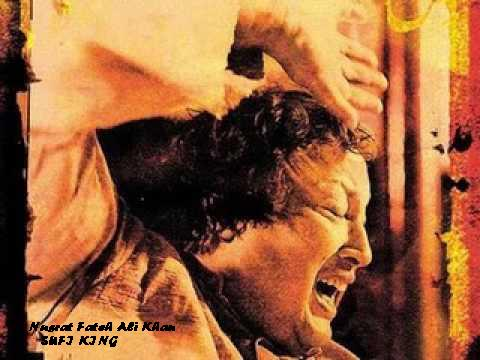

Sufi music is a genre of music inspired by Sufism, and by the works of Sufi poets, like Rumi, Hafez, Bulleh Shah and Khwaja Ghulam Farid.
Qawali is the most well known form of Sufi music, common in India and Pakistan . However, music is also central to the whirling dervishes and the ceremony of Sema, who use a slow, sedate form of music featuring the Turkish flute, the ney. The West African gnawa is another form, and Sufis from Indonesia to Afghanistan to Morocco have made music central to their practises. Some of the Sufi orders have taken an approach more akin to puritan forms of Islam, declaring music to be unhelpful to the Sufi way.
Sufi love songs are often performed as ghazals and Kafi, a solo genre accompanied by percussion and harmonium, using a repertoire of songs by Sufi poets. |